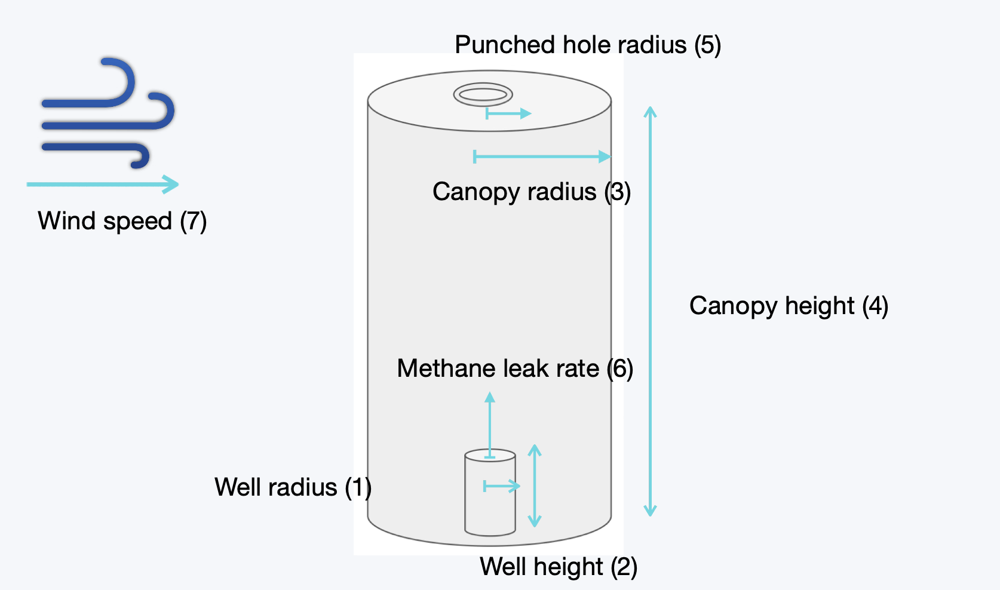
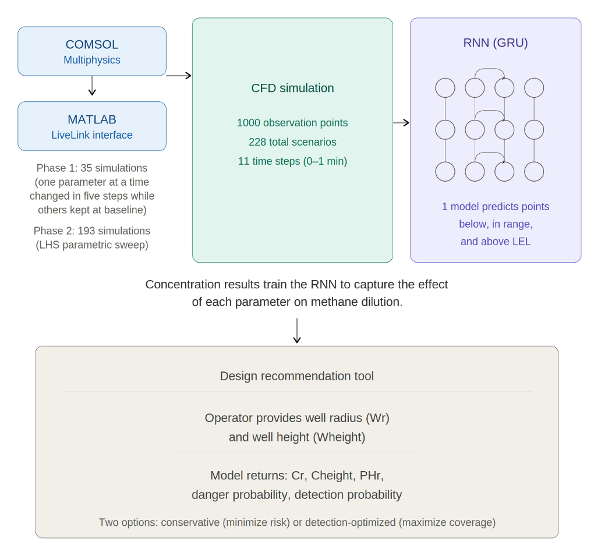
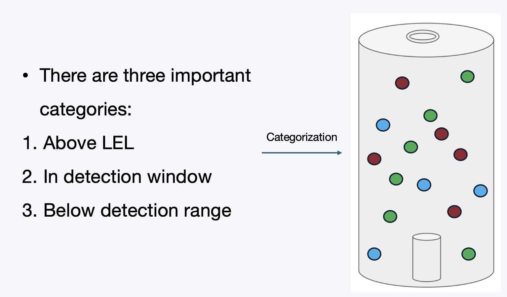
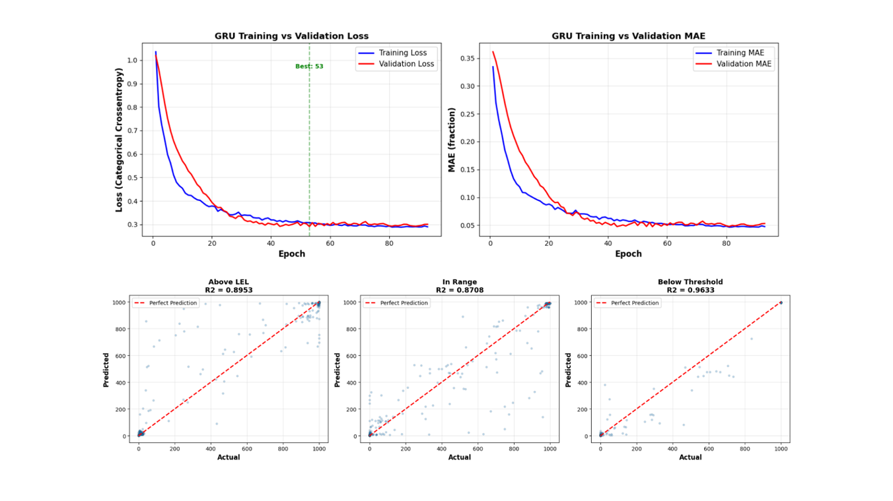

Computational fluid dynamics and machine learning for methane detection and chamber design.
Detecting methane emissions with a static flux chamber is at least a seven-dimensional design problem. The relevant variables include well radius and height, chamber radius and height, outlet-hole radius, methane leak rate, and wind speed. This parameter space is too large to test experimentally at the resolution needed to identify an effective chamber design. Wind conditions and leak rates also cannot be controlled during field measurements, so parametric sweep simulations are needed to isolate the effect of each variable and evaluate interactions among them. The simulations also allow the system to be tested under extreme conditions that may be rare in the field but are important for assessing safety risk and detection performance.
Time-dependent simulations were automated in COMSOL Multiphysics through MATLAB LiveLink and run on high-performance computing resources, including the University of Southern California's computing cluster. Because each simulation is computationally expensive, a neural-network surrogate model was trained on the simulation results. An operator can enter a well's height and diameter, select an acceptable risk level, and receive a recommended chamber design within minutes.

The study used automated parameter sweeps to generate methane concentration data across 228 scenarios, 1,000 observation points, and 11 time steps during the first minute of each simulation.

Each simulated observation was assigned to one of three categories: above the methane lower explosive limit (LEL), within the sensor's detection window, or below the detection range. These categories convert raw concentration predictions into outcomes directly relevant to safety and monitoring performance.

A gated recurrent unit (GRU) model was trained on the simulation outputs to approximate the relationships among design variables, environmental conditions, methane dilution, and the three outcome categories. This surrogate model allows many candidate designs to be evaluated far more quickly than running a new CFD simulation for every case.

The resulting tool accepts well radius and height as operator inputs and recommends chamber radius, chamber height, and outlet-hole radius. It can return either a conservative design that prioritizes risk reduction or a detection-optimized design that prioritizes monitoring coverage.
Challenges in Designing a New Smart Static Methane Detection and Monitoring Chamber: Application to Plugged and Unplugged Abandoned Wells, Environments, 13(7), 411 (2026).
| Domain | Methane transport and chamber design |
|---|---|
| Modeling | COMSOL Multiphysics |
| Automation | MATLAB LiveLink |
| Computing | High-performance computing at USC |
| Machine learning | GRU recurrent neural network |